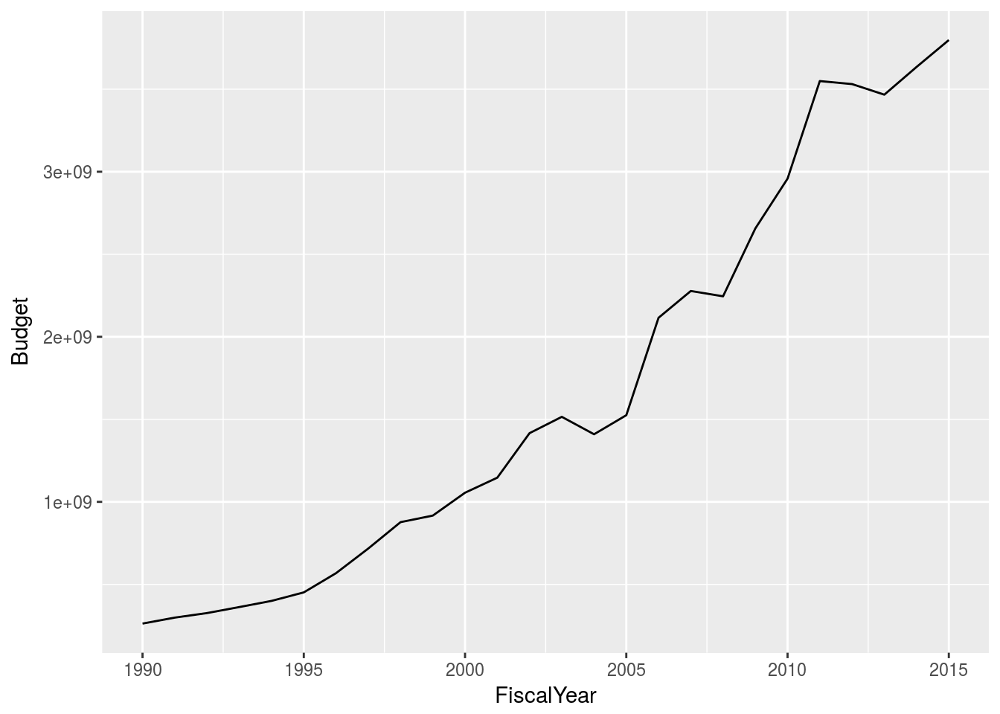
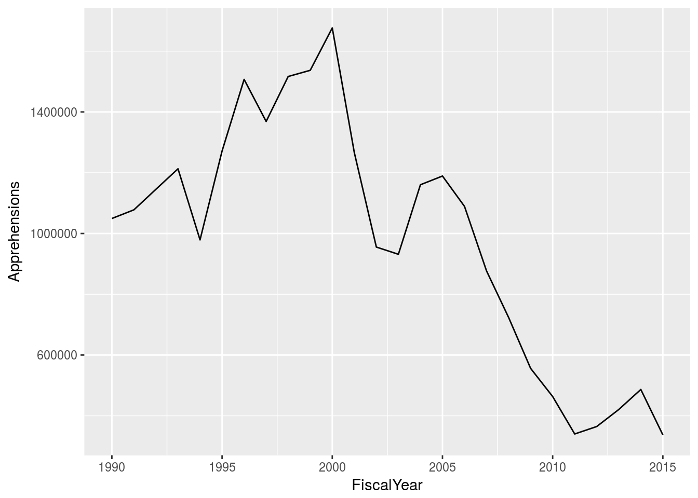
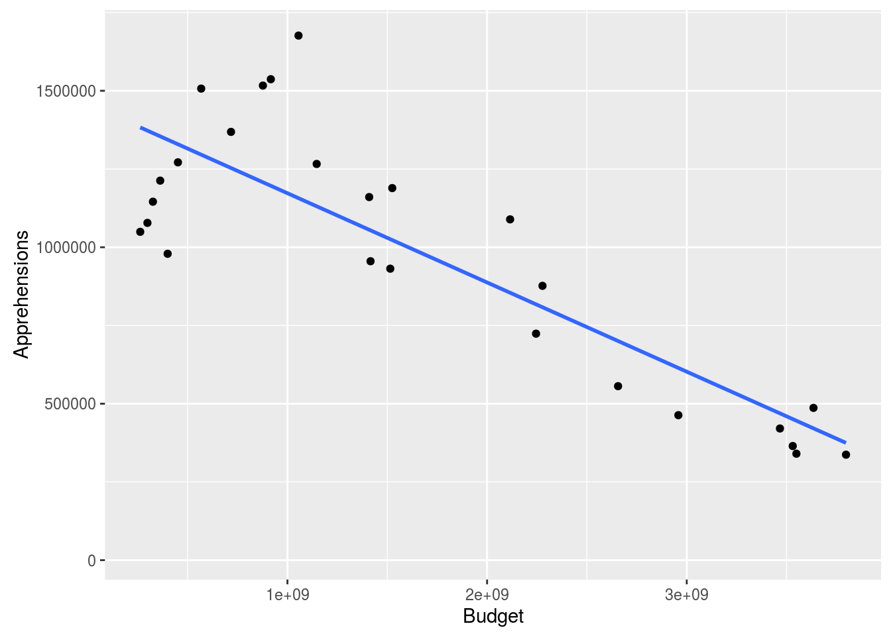
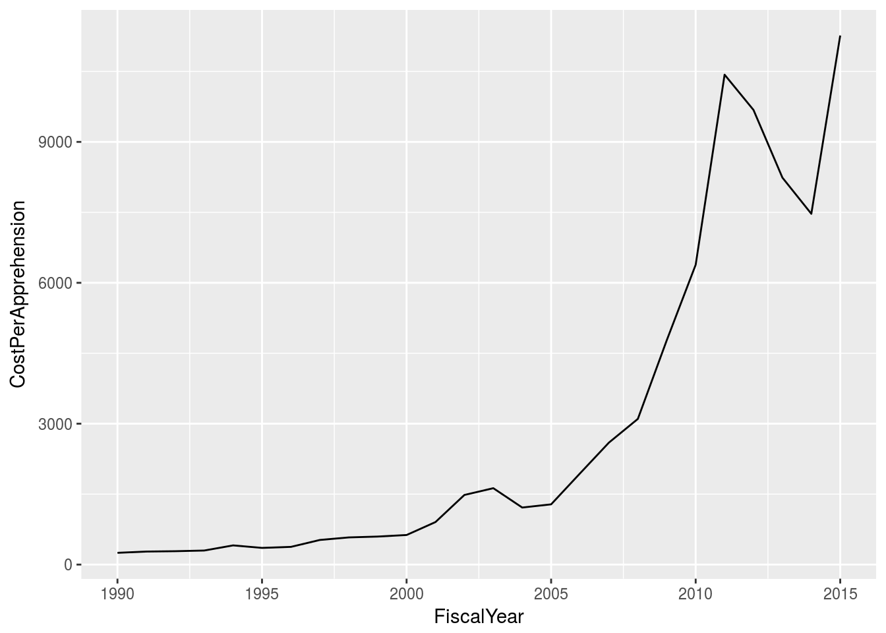

Specifically US Borders. Specifically, the US-Mexico Border.
US Customs and Border Patrol’s reputation leaves something to be desired. The concerns about Border Partol are not new.
Note on language: there’s no legal ambiguity that crossing a national border without permission to do so, either explicitly (e.g. through a crossing point with a visa) or implicitly (e.g. between states within the European Union). It is thus factually correct to observe that people who cross a national border without permission to do so are in violation of the law. They have illegally immigrated. That said, the nation into which they’ve crossed does not assert that their existence is in violation of law, only their presence in that nation. Accordingly, I’m opting to avoid the title of “illegal immigrant” for the more neutral “undocumented immigrant”. Assume for the remainder of this essay that references to “undocumented immigrants” actually means “people who entered the United States illegally.” For a useful list of discussions on the topic, please see Open Borders’ Reference on the Topic.
Labor Market Efficiency
Human Rights
If the governed want to exclude foreigners, it is their right to call for the government to do so, and the government’s responsibility to respond to that call.
Economic Welfare: We enjoy a high standard of living because the government provides services that improve out lifestyles. However, larger populations reduce the government’s ability to provide some of these services.
The case for Open Borders with nations that have more progressive welfare systems than the US.
Why do people leave their homes to make the dangerous trek across the Southwest border into the United States?
Why do people leave their homes to make the dangerous trek across the Southwest border into the United States?
Where are they coming from?
Why do children leave their homes to make the dangerous trek across the Southwest border into the United States?
Where are they coming from?
Drug runners, Alien Smuggling Organizations (ASOs) and their Coyotes
Why do people leave their homes to make the dangerous trek across the Southwest border into the United States?
Where are they coming from?
The Train of Death
Alien Smuggling Organizations - Coyotes
The US-Mexico border is not heavily guarded between population centers. Border protections span from nothing to 18-foot-high walls.
How do they get in?
How many undocumented immigrants are living in the United States?
How does living in the US affect their lifespan/health?
Cash-for-Labor markets
How do they get caught?
What happens when they do? Detention Facilities
US Customs and Border Protection
Growing Budget:
nationFYear %>%
filter(!is.na(Budget)) %>%
ggplot(aes(x=FiscalYear, y=Budget)) +
geom_line()
At the same time, the number of apprehensions has been declining:
nationFYear %>%
filter(!is.na(Budget)) %>%
ggplot(aes(x = FiscalYear, y = Apprehensions)) +
geom_line()
The combination of these factors is an agency whose effectiveness is inversely proportional to its budget.
ggplot(nationFYear, aes(x = Budget, y = Apprehensions)) +
geom_point() +
geom_smooth(method = "lm", se = FALSE)## Warning: Removed 171 rows containing non-finite values (stat_smooth).## Warning: Removed 171 rows containing missing values (geom_point).
And this degree of inefficiency is growing over time.
nationFYear %>%
mutate(CostPerApprehension = Budget/Apprehensions) %>%
filter(!is.na(CostPerApprehension)) %>%
ggplot(aes(x=FiscalYear, y=CostPerApprehension)) +
geom_line()